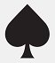

|
|
Start the Game :
Once you have read the rules you can start the game by clicking on this button -

What is this Game ?
Blackjack, also known as twenty-one, is a comparing card game between usually several players and a dealer, whereeach player in turn competes against the dealer, but players do not play against each other. The objective of the game is to beat the dealer in one of the following ways: -> Get 21 points on the player's first two cards (called a "blackjack" or "natural"), without a dealer blackjack.br> -> Reach a final score higher than the dealer without exceeding 21; or -> Let the dealer draw additional cards until their hand exceeds 21. Players are each dealt two cards, face up or down depending on the casino and the table at which you sit. Thedealer is also dealt two cards, normally one up (exposed) and one down (hidden). The value of cards twothrough ten is their pip value (2 through 10). Face cards (Jack, Queen, and King) are all worth ten. Aces canbe worth one or eleven. A hand's value is the sum of the card values. Players are allowed to draw additionalcards to improve their hands. Once all the players have completed their hands, it is the dealer’s turn. The dealer hand will not be completedif all players have either busted or received blackjacks. The dealer then reveals the hidden card and must hituntil the cards total 17 or more points. Players win by not busting and having a total higher than the dealer,or not busting and having the dealer bust, or getting a blackjack without the dealer getting a blackjack. Ifthe player and dealer have the same total (not counting blackjacks), this is called a "push", and the playertypically does not win or lose money on that hand. Otherwise, the dealer wins. If a player receives 21 on the1st and 2nd card it is considered a "natural" or "blackjack" and the player is paid out immediately unlessdealer also has a natural, in which case the hand ties.
Read these rules carefully, it will give you some really useful hints on getting started, good luck !
Spoilers :
You are highly encouraged not to divulge in bad and illegal practices if you don't want to spoil the pleasure of others. However, you can help your friends by giving them some hints but be careful, do not tell them morethan they need to know to fully enjoy the game.
The purpose of this game is to win as much as you can. |